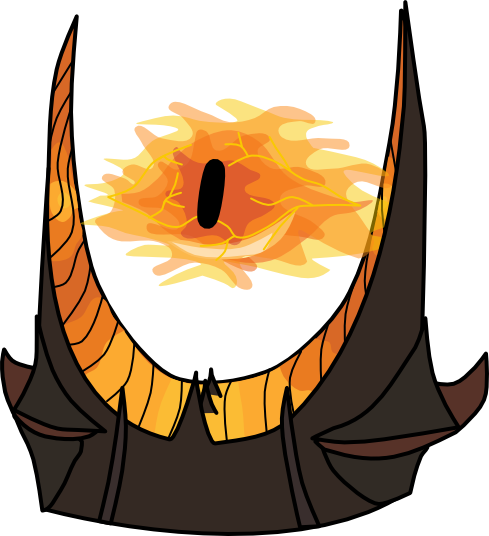

Strona Główna
Witaj w świecie "Władcy Pierścieni" - epickiej sagi fantasy stworzonej przez J.R.R. Tolkiena.
Przygotuj się na niezapomnianą podróż przez pełną przygód, magii i niebezpieczeństw krainę Śródziemia.
Siedemnastowieczny czarodziejski pierścień, który daje nieograniczoną władzę, został zgubiony i odnaleziony przez małego hobbita imieniem Frodo Baggins. Razem z odważną grupą towarzyszy, wyrusza w trudną misję zniszczenia pierścienia, aby powstrzymać jego potężne mocarstwo przed złem, które spowodowało by zniszczenie całego Śródziemia.
Podczas podróży spotkasz różnorodne postacie, takie jak potężny czarodziej Gandalf, odważnego wojownika Aragorna, elfów, krasnoludów, a także niebezpieczne stworzenia, takie jak Orki i Nazgûle. Przeżyjesz niezapomniane bitwy, jak na przykład walkę o Helmowy Jar czy ostateczną bitwę o Pierścień w Mordorze.
Jednak "Władca Pierścieni" to nie tylko historia walki dobra ze złem. To także opowieść o przyjaźni, odwadze, poświęceniu i nadziei. Poprzez unikalne i pełne detali opisy, Tolkien ukazuje nam bogaty świat Śródziemia, z jego różnorodnymi rasami, kulturami i językami.
Przygotuj się na głębokie zanurzenie w literaturze fantasy, która nie tylko stała się inspiracją dla kolejnych dzieł, ale także dotyka uniwersalnych tematów, takich jak walka z wewnętrznymi demonami, siła przyjaźni i moc prostych, choć niezwykłych bohaterów.
Czy jesteś gotowy, by odkryć tajemnice Śródziemia? Wkraczaj do tego magicznego świata i przygotuj się na niezapomniane przygody w "Władcy Pierścieni".
Nie wszyscy, którzy błądzą, są zagubieni.
Aragorn
Nawet najmniejsza osoba może zmienić bieg przyszłości.
Galadriel

Myśl, że wszystko, co masz do zrobienia, to jedno małe kroczek po drugim, tak jakbyś wędrował po całej Ziemi.
Samwise Gamgee

Wszystko, co musimy zdecydować, to, co zrobić z czasem, który nam jest dany.
Gandalf
OPINIE
To jest najbliższe, czego kiedykolwiek doświadczyłem doskonałego filmu
~Steven Spielbergamerykański reżyser, The New York Times
Władca Pierścieni jest niezwykłym osiągnięciem kinematografii. Peter Jackson stworzył coś, czego jeszcze nigdy wcześniej nie widzieliśmy
~George Lucasamerykański reżyser, The Hollywood Reporter
To jest naprawdę niezwykła epopeja fantasy. Przepiękne efekty specjalne i wspaniała narracja sprawiają, że ten film jest jednym z najlepszych
~Cate Blanchettaustralijska aktorka, The Guardian
Władca Pierścieni to bez wątpienia arcydzieło, które nie tylko dostarcza niesamowitej rozrywki, ale także posiada głębię emocjonalną i artystyczną
~Christopher Leebrytyjski aktor, The Telegraph
Chcesz wiedzieć więcej?
Scrolluj dalej!
informacje
Autor
John Ronald Reuel Tolkien
J.R.R. Tolkien jest uważany za jednego z najważniejszych pisarzy fantasy i jego twórczość miała ogromny wpływ na literaturę fantastyczną. Jego prace odznaczają się bogatym światem, epickimi opowieściami, głębokimi postaciami i wyrafinowaną konstrukcją języków.
- Urodzenie:
3 stycznia 1892 roku - Śmierć
2 września 1973 roku - Narodowość:
Brytyjczyk - Zawód:
Pisarz, lingwista, profesor uniwersytecki - Najważniejsze dzieła:
- Władca Pierścieni
- Hobbit
- Silmarillion (The Silmarillion)
- Niedokończone opowieści (Unfinished Tales)
Jego epicka saga Władca Pierścieni zdobyła ogromną popularność i miała ogromny wpływ na gatunek literatury fantastycznej.
Tolkien nie tylko stworzył fascynującą opowieść, ale także całkowicie nowy świat o nazwie Śródziemie. Jego niezwykłe umiejętności twórcze pozwoliły mu zbudować pełnoprawny i bogaty świat, z unikalnymi rasami, językami, historią i mitologią.
Stworzył różne języki dla swoich fikcyjnych ras w Śródziemiu, takie jak sindarin i quenya. Jego fascynacja językami przyczyniła się do głębi i autentyczności stworzonego przez niego świata.
Dzieła
"Władca Pierścieni" to epicka saga, która opowiada historię walki o przetrwanie Śródziemia, fantastycznego świata stworzonego przez Tolkiena. Głównym wątkiem jest losy pierścienia władzy, który ma ogromną moc i który trzeba zniszczyć, aby uniemożliwić jego wykorzystanie przez Ciemnego Władcę Saurona.
- Publikacja:
Pierwsze wydanie trzech tomów: "Drużyna Pierścienia" (1954), "Dwie wieże" (1954) i "Powrót króla" (1955) - Gatunek:
Epicka powieść fantasy - Główne postacie:
- Frodo Baggins: Hobbit, który został powołany, aby znieść Pierścień.
- Gandalf:Potężny czarodziej, który prowadzi i doradza towarzyszom Froda w ich misji.
- Aragorn:Spadkobierca królów, który prowadzi walkę przeciwko siłom zła.
- Samwise Gamgee:Wierny przyjaciel Froda i jego najbliższy towarzysz.
- Gollum:Postać, która przedtem była posiadaczem Pierścienia i próbuje go odzyskać.
- Tematyka:
Porusza wiele tematów, takich jak siła przyjaźni, walka dobra ze złem, heroizm, samopoświęcenie, lojalność i los jednostki wobec większego celu. - Nagrody:
- International Fantasy (1957)
- Hugo (1956)
- Carnegie dla Dzieci (1972)
- Guardian Fiction (2007)
- World Fantasy Life Achievement (1973)
- Locus dla Najlepszej Serii Fantasy (1984)
Książka miała ogromny wpływ na literaturę fantasy, kształtując wiele kolejnych dzieł tego gatunku. Zyskała również ogromną popularność dzięki swojemu wciągającemu światu, mistyce i dogłębnym postaciom.
Świat
Świat Władcy Pierścieni, znany jako Śródziemie, jest bogatym i rozległym światem stworzonym przez J.R.R. Tolkiena. Składa się z różnych krain, z których każda ma swoje unikalne cechy i znaczenie w historii.
Krainy
- Shire
jest przyjaznym i spokojnym regionem zamieszkanym przez hobbitów. To tam rozpoczyna się główna historia, gdy Frodo Baggins odkrywa, że posiada Pierścień. Shire symbolizuje sielskie życie hobbitów i stanowi kontrast wobec bardziej niebezpiecznych krain. - Mordor
ciemna i niegościnna kraina, kontrolowana przez Ciemnego Władcę Saurona. To w Mordorze znajduje się Góra Przeznaczenia, gdzie Frodo i jego towarzysze muszą zniszczyć Pierścień. Mordor jest miejscem pełnym niebezpieczeństw i przedstawia siłę zła. - Gondor
jest królestwem ludzi i jednym z ostatnich bastionów obronnych przeciwko siłom Saurona. To tam Aragorn, spadkobierca królów, ma nadzieję odbudować dawną potęgę Gondoru i przewodzić w walce przeciwko Ciemnemu Władczy. - Rohan
kraina rycerzy i jeźdźców, znana z ich wspaniałych koni. Jest sojusznikiem Gondoru i odgrywa ważną rolę w bitwie dobra ze złem. Król Théoden i jego siostrzeniec Éomer odgrywają kluczowe role w obronie Śródziemia.
Postacie
- Frodo Baggins
Frodo jest hobbitom, który zostaje powołany do niezwykłej misji niesienia Pierścienia do Góry Przeznaczenia i jego zniszczenia. Jego determinacja, odwaga i siła charakteru sprawiają, że jest kluczową postacią w walce ze złem. - Gandalf
Gandalf to potężny czarodziej i mentor Froda. Jego mądrość, umiejętności magiczne i nieustępliwość w walce przeciwko Sauronowi są nieocenione. Gandalf pełni rolę przewodnika i doradcy dla towarzyszy Froda. - Aragorn
Aragorn, znany także jako Strider, jest spadkobiercą królów Gondoru i przyszłym władcą. Jego odwaga, umiejętności w walce i przywództwo stanowią kluczową siłę w walce przeciwko Sauronowi. Aragorn jest również miłością Arwen, córki Elronda. - Sauron
Sauron to Ciemny Władca, główny antagonista w historii. Jego dążenie do odzyskania Pierścienia i zyskania absolutnej władzy stanowi zagrożenie dla Śródziemia. Sauron symbolizuje zło i korupcję, a jego rola w historii polega na próbie odzyskania Pierścienia i podporządkowania sobie całego świat.
Wpływ
Władca Pierścieni miał ogromny wpływ na literaturę fantasy i przyczynił się do kształtowania wielu kolejnych dzieł w tym gatunku. Oto kilka głównych aspektów wpływu tej książki:
- Kształtowanie gatunku fantasy
Władca Pierścieni ustanowił wiele konwencji i tropów charakterystycznych dla literatury fantasy. Jego epicka skala, złożony świat, różnorodność ras i postaci, mitologia oraz walka dobra ze złem stały się wzorcem dla wielu innych autorów fantasy. - Tworzenie wciągającego świata
Świat Śródziemia stworzony przez Tolkiena zyskał ogromną popularność i oddziaływał na czytelników swoją bogatą historią, geografią, językami i kulturami. Inni pisarze fantasy podjęli próbę tworzenia równie złożonych i fascynujących światów w swoich dziełach. - Dogłębne postacie
Postacie w Władcy Pierścieni są dobrze rozwinięte, pełne motywacji, konfliktów i emocji. Ta dogłębność charakterów wpłynęła na literaturę fantasy, inspirując innych autorów do tworzenia równie wielowymiarowych postaci - Pisanie epickich opowieści
Władca Pierścieni to saga o ogromnym zakresie i rozmachu. Jego wpływ polegał na zachęcaniu pisarzy fantasy do podejmowania większych projektów narracyjnych i tworzenia rozbudowanych, wielotomowych opowieści. - Popularność i kultura masowa
Książka Władca Pierścieni zdobyła ogromną popularność i zyskała status kultowego dzieła. Jej adaptacje filmowe, takie jak trylogia filmowa Petera Jacksona, przyczyniły się do jeszcze większej popularności i rozpoznawalności świata Tolkiena. Stał się on częścią kultury masowej i wywarł wpływ na filmy, gry komputerowe, sztuki teatralne i inne formy rozrywki.
Wszystkie te czynniki sprawiły, że Władca Pierścieni był i nadal jest jednym z najważniejszych dzieł literatury fantasy, które miało ogromny wpływ na rozwój gatunku oraz na wyobraźnię czytelników na całym świecie.
Filmy
Filmy "Władca Pierścieni" to monumentalne dzieła filmowe, które przekazały wizję Śródziemia Tolkiena na ekran. Zostały entuzjastycznie przyjęte zarówno przez fanów książek, jak i szeroką publiczność, stając się jednymi z najważniejszych i najbardziej wpływowych filmów fantasy w historii kina.
Władca Pierścieni: Drużyna Pierścienia
CZ: 1
- Wydanie
2001 - Czas trwania
Około 3 godzin - Reżyseria
Peter Jackson - Adaptacja pierwszej części trylogii Władca Pierścieni autorstwa J.R.R. Tolkienali>
- Zyskał ogromną popularność i uznanie zarówno krytyków, jak i widzów
- Nagrodzony 4 Oscarami, w tym za najlepszą muzykę i efekty specjalne
Władca Pierścieni: Dwie Wieże
CZ: 2
- Wydanie
2002 - Czas trwania
Około 3 godzin - Kontynuacja trylogii Władca Pierścieni
- Przyjęty entuzjastycznie przez publiczność i krytyków
- Nagrodzony 2 Oscarami, m.in. za najlepszą scenografię i montaż dźwięku
Władca Pierścieni: Powrót króla
CZ: 3
- Wydanie
2003 - Czas trwania
Około 3 godzin - Ostatnia część trylogii Władca Pierścieni
- Ogromny sukces komercyjny i artystyczny
- Nagrodzony aż 11 Oscarami, w tym za najlepszy film, reżyserię i scenariusz adaptowany
Trylogia "Władca Pierścieni"
- Ogółem łączy ponad 9 godzin filmowych przygód
- Przedstawia epicką historię walki o przetrwanie Śródziemia
- Zdobycie wielu prestiżowych nagród i uznanie jako jedna z najlepszych adaptacji literackich
- Zyskała ogromną popularność i wpłynęła na przyszłe produkcje fantasy
Książki
Każda z książek "Władca Pierścieni" to wielowątkowa i rozbudowana opowieść o walce dobra ze złem w magicznym świecie Śródziemia. Zawierające bogactwo opisów, historii, postaci i symboliki, książki Tolkiena zdobyły ogromną popularność i wpłynęły na gatunek literatury fantastycznej. Przez wiele czytelników uważane są za arcydzieła literatury fantasy i stanowią niezwykłą podróż przez świat pełen przygód, magii i głębokich przemyśleń.
Władca Pierścieni: Drużyna Pierścienia
- Opowiada o przygodach grupy bohaterów w ich misji zniszczenia Pierścienia Władzy
- Eposowa historia pełna walki dobra ze złem, przyjaźni i heroizmu
- Pełna mistycyzmu, bogactwa detali i głębokich postaci
- Przedstawia różnorodne krainy Śródziemia, takie jak Shire, Rivendell, Mines Tirith, Mordor i wiele innych
- Jeden z najważniejszych klasyków literatury fantasy
Władca Pierścieni: Dwie Wieże
- Rozwija wątki z poprzedniej części, podążając za losami bohaterów
- Epickie bitwy i wzrastające napięcie w walce przeciwko siłom zła
- Nowe postacie i krainy, takie jak Rohan, Isengard, Helms Deep
- Tematyka wojny, sojuszy i poświęcenia dla większego dobra
Władca Pierścieni: Powrót króla
- Kulminacyjny finał historii o Pierścieniu Władzy
- Epickie starcie dobra ze złem i losy bohaterów osiągają punkt kulminacyjny
- Emocjonujące momenty, poświęcenie i zaskakujące zwroty akcji
- Rozwiązanie wątków i zakończenie epickiej sagi
streszczenie
Jesteś pewny że chcesz dowiedzieć się co działo się w tak fascynującej książce?
Nie ma już odwrotu!
Władca pierścieni
W pełnym emocji streszczeniu "Władcy Pierścieni" przenosimy się do magicznego Śródziemia, gdzie losy bohaterów splatają się w niezwykłą historię. Pierwszym spotkaniem jest spokojna i idylliczna kraina Shire, gdzie spotykamy Frodo Bagginsa, młodego hobbita. Nagły pojawienie się tajemniczego Pierścienia Władzy zmienia jego życie i zaczyna się niebezpieczna misja. Razem z wiernymi przyjaciółmi, takimi jak Samwise Gamgee, Merry i Pippin, Frodo wyrusza w pełną niebezpieczeństw podróż przez lasy, góry i rzeki. Ich odwaga i determinacja spotykają się z nieustającymi zagrożeniami, od krwiożerczych Orków po zjawiskową piękność Elronda i jego Rady. Spotykamy też potężnych czarodziejów, takich jak błyskotliwy Gandalf, który prowadzi Frodo przez labirynt tajemnic i odkrywa mroczne plany Ciemnego Władcę Saurona. W konfrontacji ze złem, bohaterowie doświadczają strachu, zwątpienia, ale także nadziei i siły woli. W ich podróży poznajemy różnorodne krainy Śródziemia, takie jak tajemniczy las Lothlórien, rycerski Gondor czy nieprzenikniony Mordor. Każda z tych miejscowości wzbudza różnorodne emocje, od zachwytu nad naturalnym pięknem po lęk przed ciemnością i przemocą. Bohaterowie muszą zmierzyć się z własnymi słabościami, pokonać wewnętrzne demony i podjąć trudne decyzje, które mają wpływ na przyszłość całego Śródziemia. Ich walka dobra ze złem kulminuje w epickiej bitwie na polach Pelennoru, gdzie odwaga i poświęcenie decydują o losie światów. Ostateczna konfrontacja między Frodo a Sauronem jest napięta i pełna dramatyzmu. Chwila, gdy Pierścień Władzy jest niszczone, przynosi ulgę, ale także smutek za utraconymi bliskimi i cierpieniem, jakie bohaterowie przeszli w trakcie swojej podróży. Niesamowite emocje towarzyszą nam przez całą opowieść. Od ekscytacji podczas pojedynków, po wzruszenie, gdy bohaterowie wykazują odwagę i poświęcenie. Nie brakuje też momentów smutku i żalu za utraconymi, które przemykają przez nasze serca. "Władca Pierścieni" to nie tylko przygoda, ale również podróż emocjonalna. To opowieść o miłości, lojalności, przyjaźni i siły ludzkiego ducha w obliczu największych trudności. Książka ta zostawia niezatarte ślady w sercach czytelników, zachwycając ich magią, emocjami i niezapomnianymi postaciami.
Język w książce jest ciężki!
Aby ułatwić sobie czytanie fascynującej książki, sprawdź co znaczą najważniejsze zwroty
ZOBACZ
Słownik
- Mithril
Wysoko ceniony i niezwykle lekki metal występujący w Śródziemiu. Jest to jedna z najcenniejszych substancji, często używana do wykonywania zbroi. - Istari
Rasa czarodziejów, wysłana do Śródziemia, aby przeciwstawić się Sauronowi i jego siłom. Gandalf, Saruman i Radagast są przykładami Istari. - Valinor
Kraina na zachodzie Śródziemia, zamieszkana przez Valar - potężne istoty o boskim statusie. Valinor jest uważany za raj i miejsce, w którym panuje wieczna harmonia. - Ents
Olbrzymie istoty przypominające drzewa, posiadające świadomość i zdolność do mówienia. Ents chronią lasy i przyrodę Śródziemia. - Nazgûl
Dziewięciu królów ludzi, którzy zostali uwikłani przez Saurona w pierścienie władzy, stając się jego niewidzialnymi i śmiertelnymi sługami. Są nazywani również Czarnymi Jeźdźcami. - Palantír
Magiczne kryształowe kule, które umożliwiają komunikację na odległość oraz oglądanie odległych miejsc i wydarzeń. Palantíry były używane przez wielu bohaterów, w tym przez Sarumana i Denethora. - Balrog
Potężne stworzenie o ognistym wyglądzie, które zamieszkuje podziemne kopalnie i tunele. Balrogi są niebezpiecznymi przeciwnikami, a jeden z nich, znanym jako Durin's Bane, stoczył legendarną walkę z Gandalfem. - Valar
Potężne istoty o boskim statusie, które mają władzę nad naturą i losami Śródziemia. Są to starsze istoty niż elfy i ludzie, i mają za zadanie chronić świat przed złem. - Arda
Świat stworzony przez Ilúvatara, najwyższego boga w mitologii Śródziemia. Arda jest głównym kontynentem, na którym rozgrywają się wydarzenia powieści. - Istya
Czysta, magiczna substancja, która jest podstawą magii w Śródziemiu. Istya występuje w różnych formach, takich jak woda, powietrze i światło, i jest wykorzystywana przez czarodziejów i inne magiczne istoty do wykonania czarów i zaklęć. - Eä
Słowo oznaczające "bycie" lub "istnienie" w języku Valar. Jest często używane w kontekście tworzenia świata i potęgi Ilúvatara. - Orthanc
Wysoka wieża znajdująca się w Isengardzie, będąca siedzibą Sarumana. Jest to również nazwa samego budynku, który jest silnie ufortyfikowany. - Eowyn
Księżniczka Rohanu, córka króla Théodena. Jest odważną i niezależną kobietą, która walczy u boku Aragorna w bitwie o Pelennor. - Gollum
Postać, która kiedyś nosiła imię Sméagol. Gollum jest wyniszczonego umysłu i zdeformowanym hobbitowym nosicielem Jedynego Pierścienia. - Barad-dûr
Potężna twierdza Saurona, położona w Mordorze. Jest to centralne miejsce jego władzy i siedziba Czarnego Władcy. - Ithilien
Piękna kraina leżąca na wschód od Mordoru. Jest to teren zamieszkiwany przez Dunedainów i elfy, z bujnymi lasami i pachnącymi ogrodami. - Numenor
Wielkie królestwo ludzi, które zostało zniszczone przez Ilúvatara ze względu na próbę ludzi zdobycia nieśmiertelności. Numenor jest miejscem narodzin Aragorna. - Morgul
Nazwa doliny i twierdzy znajdujących się na wschodnich granicach Gondoru. Jest to siedziba Czarnych Jeźdźców i miejsce grozy i zepsucia. - Harad
Egzotyczne i niezbadane ziemie na południe od Gondoru, zamieszkiwane przez różnorodne plemiona i istoty, takie jak Haradrim i Mumakile. - Angmar
Królestwo Saurona, położone na północy Śródziemia. Angmar było miejscem narodzin czarnoksiężnika zwanego Nekromantą.
władca-obraczek.com